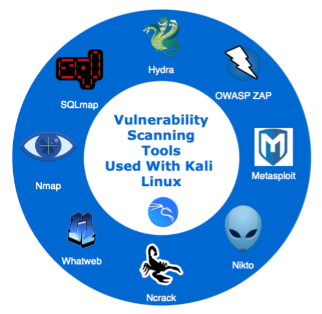

Project Evaluation

Evaluation: Final project (Unit 11) vs. Design Proposal (Unit 6)
In unit 6 (week 6) of the module, teams were given the objectives of identifying the appropriate regulations (GDPR, ICO, PCI-DSS, etc.), creating a list of possible vulnerabilities as well as a summary list of recommendations and potential mitigations for the assigned website (https://loadedwithstuff.co.uk). The initial design document involved presenting information in theory ascertained from various research papers in the industry. This was purely a theoretical exercise with not much focus on the practical aspect of scanning tools. Group 1 had identified the following vulnerabilities in order of preference:
- Weak account passwords
- Embedded Passwords
- Default service and admin accounts on databases
- Spoofing (Phishing & Pretexting attacks)
- Exploiting open ports
- Operating System Vulnerabilities
- E-Skimming
- SQL (Structured Query Language) Injection
- Cross-Site-Scripting (XSS)
- Denial of Service Attacks
Recommendations were then provided based on extensive research papers applicable to e-commerce websites. On the contrary, the objectives for the project in Unit 11 involved utilizing various vulnerability scanning tools against the assigned website. It was required that a summary of the vulnerabilities be identified and presented in a non-technical manner. Furthermore, recommendations on how to improve the websites security was also required.
Kali Linux was selected as the Linux distribution to perform the penetration exercise mentioned above along with the various scanning tools available (Figure 1 below).
Kali Linux is an open-source Linux distribution that is designed to perform penetration testing amongst other security related tasks (OffSec Services Limited, 2022). The results were then cross referenced to the theoretical vulnerabilities identified in the initial design document. It was found that the website had Imunify360-webshield/1.18 installed which offered Web Application Firewall (WAF) capabilities. According to CloudLinux (2022) Imunify360 is a complete security solution designed for Linux servers that provides an Intrusion Detection and Protection System (IPS and IDS) as well as being able to block scanners amongst other capabilities. As a result, it was difficult to conclude whether the following vulnerabilities existed as the tools used to identify these vulnerabilities were blocked:
- Weak account passwords
- Embedded Passwords
- SQL (Structured Query Language) Injection
- Default service and admin accounts on databases
Nevertheless, alternative tools were used to identify exploitable open ports (nmap), operating system vulnerabilities as well as web application vulnerabilities. OWASP ZAP as well as Nikto proved to be very useful in identifying these vulnerabilities. It was also observed that after multiple scans to the website, these tools were being blocked as well. This was probably due to the greylist/blacklist feature of Imunify360-webshield which blocks specific source IP addresses for a certain period (CloudLinux, 2022). One way around this obstacle was the installation of a VPN client, which proved to be successful for a while but was eventually blocked.
Various recommendations were put forward to further enhance the websites security, these included, bocking all unused open ports, shutting down insecure ports (http - port 80, ftp – port 21), updating all software packages, updating Operating systems amongst many others. The details can be found in the design project document.
In conclusion, the two projects mentioned above allowed individuals, and the group as a whole to acquire a great deal of knowledge in identifying and analysing vulnerabilities in systems as well as providing meaningful recommendations. Furthermore, these tasks provided the opportunity to study the governing body and associated regulations (GDPR, ICO, PCI-DSS) in more detail as well as become fluent in using Kali Linux to perform penetration testing exercises.
References
CloudLinux (2022) Introduction. Available from: https://docs.imunify360.com/introduction/ [Accessed 09 February 2022].
CloudLinux (2022) Introduction. Available from: https://docs.imunify360.com/introduction/ [Accessed 09 February 2022].
Click here to download the above evaluation in a .pdf format